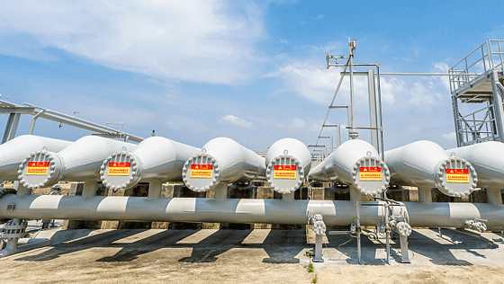
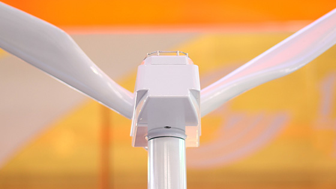

|  | 建水生态站现有固定人员18名，其中正高级7名，副高级2名，中级6名。涵盖的专业领域包括水土保持学、自然地理学、生态水文学、植物学、气候变化、岩溶侵蚀等多学科领域。 |
| 建水生态站拟建600平方米综合实验用房，内设办公室、数据分析室、资料室、化学分析室、植物与土壤标本（样品）室、会议室及研究人员宿舍等。并以不同石漠化程度的人工林、次生林生态系统等为主要观测对象，建立19个固定样地。生态站配备坡面径流场，水量平衡场，气象观测场，样地土壤水分监测仪等。同时，将配备室内室外试验仪器，LI-8100土壤呼吸仪，LI-6400XT光合仪，植物液流测定仪器，连续流动分析仪，土壤入渗仪，探地雷达等，用于科学研究。 |  |
| 依托生态站，先后承担各类课题20余项，其中国家重点研发计划项目4项，国家自然科学基金4项，中央级公益性科研院所专项资金重点项目1项，国家十二五科技支撑项目1项，国家林业局林业行业公益性专项1项，国家林业局世界银行贷款项目1项，中国博士后科学基金1项，国家林业局其他项目3项。生态站先后培养博士后3名，博士生6名，硕士生20余名，公开发表SCI论文10余篇，获得多项国家专利。 |